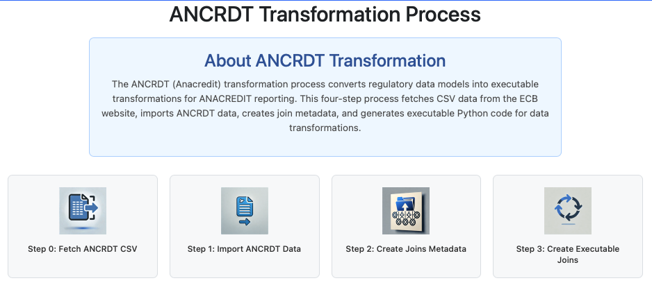

The AnaCRedit Transformation Process converts regulatory data models into executable transformations for ANACREDIT reporting. This 4-step workflow ensures compliance with ECB (European Central Bank) analytical credit data requirements.

Execute steps in order: Fetch CSV → Import Data → Create Joins → Generate Code
| Step | Purpose | Action | Result |
| Step 0: Fetch ANCRDT CSV | Downloads latest AnaCRedit specifications from ECB | Click "Step 0: Fetch ANCRDT CSV" | Latest AnaCRedit CSV files downloaded and ready for import |
| Step 1: Import ANCRDT Data | Processes CSV files and imports AnaCRedit data model | Click "Step 1: Import ANCRDT Data" | AnaCRedit data model imported and ready for joins |
| Step 2: Create Joins Metadata | Analyzes data model and creates join specifications | Click "Step 2: Create Joins Metadata" | Join metadata generated and ready for code generation |
| Step 3: Create Executable Joins | Converts join metadata into executable Python code | Click "Step 3: Create Executable Joins" | Complete executable code generated and ready for production |
| Sequential Execution | Data Quality Management | Performance Optimization |
| Execute steps in order: Fetch → Import → Metadata → Generate | Verify ECB connectivity before fetching data | Schedule downloads during off-peak ECB access hours |
| Complete each step before proceeding to the next | Monitor import validation results for accuracy | Monitor system resources during processing operations |
| Validate results at each stage before moving forward | Review join metadata accuracy for proper relationships | Optimize generated code for your specific data volumes |
| Test generated code functionality before deployment |
| Connection Problems | Import Failures | Join Metadata Issues | Code Generation Problems |
| Unable to fetch CSV from ECB | Data import fails with errors | Incorrect relationship generation | Non-functional generated code |
| • Verify internet connectivity and firewall settings • Check ECB repository status and availability • Review proxy settings and authentication | • Validate CSV file formats and completeness • Check database connectivity and permissions • Review import logs for specific errors | • Verify import completed successfully • Check for data model inconsistencies • Review ECB specification updates | • Confirm join metadata is complete • Check Python environment and dependencies • Review code generation logs for errors |
| Ongoing Compliance | Specification Updates | Audit Trails | Requirement Changes |
| Maintain compliance with ECB requirements | Track ECB specification changes | Keep supervision audit trails | Monitor regulatory requirement updates |
| Workflow Dashboard | Core Banking | Reporting Platforms | Quality Management |
| Integrate with broader workflows | Connect to source data systems | Link to regulatory submission systems | Connect to data governance tools |
| Automated Scheduling | Custom Business Rules | Performance Tuning | Compliance Monitoring |
| Set up regular ECB data fetching | Implement institution-specific validation | Optimize for your data volumes and environment | Track regulatory changes and updates |